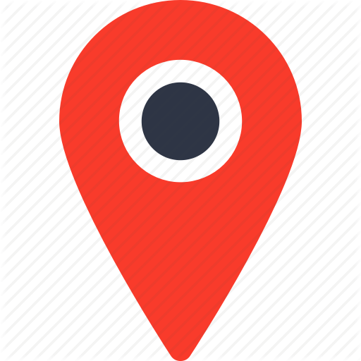

<ion-header>
  <ion-navbar color="danger">
    <ion-title>Seleccione en el mapa</ion-title>
    <ion-buttons end>
      <button ion-button tappable>
        OK
      </button>
    </ion-buttons>
  </ion-navbar>


</ion-header>


<ion-content>
  <div id="map_canvas">
    <ion-card>
      <ion-item>
        <ion-icon name="map" color="iconos" item-left></ion-icon>
        <span>{{direccion}}</span>
      </ion-item>
    </ion-card>
    
  </div>
</ion-content>